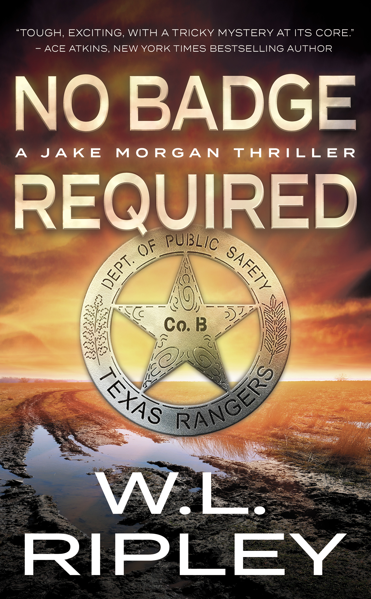

|

No Badge Required (Jake Morgan 2)by W.L. Ripley
Jake Morgan is a stubborn, no-holds-barred investigator with a cutting wit and little patience for influence or intimidation. When an exotic dancer is murdered, he comes in ready to take down the powerful Country Club group rumored to exploit women—even if its members can destroy the investigation and Jake himself. Words from W.L. Ripley Jake Morgan is an iconoclastic investigator: small-town tough, Texas Ranger-trained, and equally comfortable with forensics, a .357, or a cutting interrogation. He does not care about the trappings of the job, and he never bullies the locals. Honest witnesses get his respect; liars, the wealthy, and the self-important get the full force of his rapid-fire wit. My years in Texas and Missouri, along with playing and coaching college basketball and teaching at two universities, helped shape Morgan and the people around him. In No Badge Required, you will meet his girlfriend Harper Bannister and his two lifelong friends, Leo Lyons and Sheriff Buddy Johnson. Whether bullets are flying or politicians are calling for Morgan's head, those friendships keep the danger from stealing all the fun. Read for the plot, stay for the characters, and enjoy the humor. —W.L. Ripley
Get Your Copy →
|